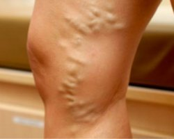
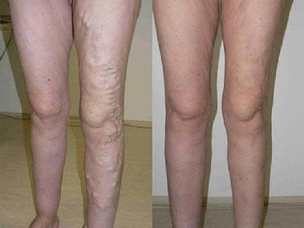
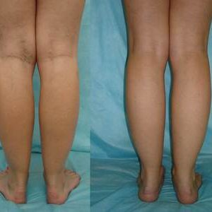

В съзнанието на обикновените хора мнението, че е невъзможно да се отървете от разширени
вени без хирургическа интервенция и за кратко време, е здраво укрепено. Въпреки че това твърдение всъщност
стана без значение още през 2000-те, мнозина все още вярват, че е така.
Науката обаче не стои на место, особено в областта на флебологията (наука, която
изучава структурата, функцията и патологиите на съдовете). Едно от най-новите открития в света е гел, който
помага да се отървете от симптомите на разширени вени . Той е признат от експертите за
най-доброто средство, което помага за премахване на разширени вени. Иновативен продукт ще
помогне за нормализиране на кръвообращението, предотвратяване на появата на паякообразни вени, той е в
състояние да осигури ефективно цялостно облекчение от симптомите на разширени вени у дома за 1 месец.
Симптоми на разширени вени
Необичайно разширени капиляри
Подути и изпъкнали кръвоносни съдове
Обриви
Сърбеж и тежест в краката
свойства на
Помага за облекчаване на подуване и болка
Помага за намаляване на анормалното разширяване на
капилярите
Стимулира кръвообращението
Помага за изглаждане и овлажняване на кожата

При редовна употреба, ще помогне да:
Облекчи болката и подуването и да възстанови естествения кръвоток.
Намали болката и минимизирайте риска от образуване на кръвни съсиреци.
Подобри състоянието на кръвоносните съдове, възстанови тяхната еластичност.
Редакцията „Hello Health“ интервюира специалисти с дългогодишен опит в областта на
флебологията. Всички те казаха едно и също нещо: те силно препоръчват на своите пациенти.
Андрю Ларсън, специалист по флеборогия (над 30 години опит). В моята
практика преди това имаше няколко случая на оперирани пациенти. Това обикновено се случва в третия или
четвъртия стадий на разширени вени. Появата на гела обаче коренно промени ситуацията.
Този прекрасен продукт може да помогне както в ранните етапи на появата на разширени
вени, така и в тежки случаи, когато изглежда невъзможно да се направи без операция. Сега препоръчвам операции
само в много трудни случаи и ви съветвам първо да опитате да разрешите проблема с този гел.
, без съмнение, най-добрият продукт за премахване на симптомите на
разширени вени и предотвратяване на появата му у дома.
Ето резултатите преди и след 1 месец употреба на този гел:
Моника Симпсън, експерт по съдово здраве (над 11 години опит).
Безспорно едно от предимствата е неговият състав. Този гел съдържа уникални естествени
съставки, които ефективно помагат за премахване на причините за разширени вени.
Искам да подчертая, че благодарение на голямото количество флавоноиди, танини и
витамини, които се съдържат в екстракта от кестен, гелът спомага за повишаване на тонуса на капилярите и
нормализиране на кръвообращението.
Ефектът от използването на този гел е просто невероятен. Вярвам, че е
революционен продукт, който драстично променя подхода за избавяне от разширени вени и ви позволява да правите
без болезнени и скъпи операции. Този гел може да се използва от хора от всички възрасти!
Алекс Найк, водещ специалист по флебология (над 30 години опит). За
помощ при разширени вени настоятелно препоръчвам да използвате . Този гел лесно ще се справи
дори със сложни случаи, ще облекчи състоянието на пациентите с третия и четвъртия етап. Той помага да се
елиминира причината за разширени вени, а не само симптомите.
Също така препоръчвам да използвате този гел като превантивна мярка, за да
предотвратите появата на разширени вени в бъдеще.
В моята практика имаше много случаи, при които помогна при тежки случаи на
разширени вени. Ето например:

Варикоза: опасност в цифри
80%Жени
имат симптоми на хронична венозна недостатъчност
20%Хора,
страдащи от разширени вени, са принудени да се подложат на опасна операция
65%Имат
повишен риск от разширени вени, особено ако в семейството има случаи на разширени вени
70%Бременни жени страдат от разширени вени
90%Жени,
които носят токчета над 8 сантиметра, страдат от болки в краката поне веднъж седмично
Ефективност на използване на в цифри
100%Не
чувстват болка или умора в краката
97%Забелязаха изчезването на съдовата мрежа.
96%Нормализира работата на кръвоносната система.
100%Не
забелязват странични ефекти.
95%Изчезнаха изпъкналите и възпалени вени.
100% ефективен продукт
Гелът е сертифициран в ЕС и одобрен за употреба в европейски страни. Ще
почувствате подобрение само след 1 месец употреба! Струва си да опитате!
Мишо, на 45 години
Краката станаха сини, вените набъбнаха. Спрях да вдигам щанги, но проблемът
не отиде никъде. Казаха ми, че само операцията ще помогне. Но гел реши въпроса в рамките на
месец! Краката отново са с нормален цвят.
Евгения, на 35 години
Редовно нанасям гела вечер след работа. Той бързо облекчава
подуването и умората, а изпотяването на краката също е значително намалено. На сутринта усещам, че
краката ми са като нови. Препоръчвам на всички
Джулия, на 35 години
Гелът е истинско спасение за мен. Прилагам го ежедневно. Само
няколко седмици от началото на използването му забелязах видимо намаляване на изпъкналите съдове,
краката ми започнаха да изглеждат по-добре, усещам лекота и енергия дори вечер
Бети, на 38 години
Имах много вени по краката. На консултацията ми казаха, че можете да ги
премахнете само хирургично. Но не исках операция. Не исках да имам белези и белези по краката си. Реших
да опитам гела , след 3 седмици употреба болката и подуването в краката изчезнаха. След още една
седмица подутите вени почти изчезнаха.
Моника, на 41 години
В продължение на няколко години страдах от разширени вени под коленете.
Вените там постоянно сърбяха, понякога боляха. Миналата година забелязах, че вените започнаха да се
подуват. И реших, че трябва да направя нещо. Отидох при специалист и той ме посъветва да опитам
. Беше невероятно, но видях разлика през първата седмица от използването на този гел. Сърбежът и
болките ми изчезнаха почти веднага. И след още 2 седмици забелязах, че вените под коленете ми почти
изчезнаха.

Анна, на 36 години
Имам разширени вени след бременност. Кремът, който ми беше препоръчан в
аптеката, ми даде само временен резултат. Компресионните чорапи бяха твърде стегнати, беше невъзможно да
се ходи. Честно казано, тогава почти се отказах и почти реших за операция, но случайно прочетох за
и го купих. Бях поразена от резултата: венозните възли на краката ми почти изчезнаха. Сега
краката ми отново са толкова красиви, колкото преди! Мога отново да нося къси поли!
Даяна, на 67 години
Имам разширени вени по наследство. Страдах от тях през целия си живот. В
младостта те много ми досаждаха и с възрастта стана много по-лошо: вената гори като огън, особено ако
цял ден съм на крака или нося тежки чанти. Дъщеря ми наскоро купи и този гел ме спаси! Никога
не съм мислила, че мога толкова бързо да се отърва от проблем, който измъчваше цял живот. Използвам този
гел през последните 6 месеца и забравих за проблемите с вените.
ЧЕСТО ЗАДАВАНИ ВЪПРОСИ
Какви могат да бъдат страничните ефекти? +
Гелът се състои от естествени съставки, не съдържа парабени,
оцветители, синтетични аромати и ГМО продукти. Продуктът е сертифициран и няма противопоказания. Не
причинява алергии и странични ефекти.
Колко време трябва да се използва? +
Продължителността на курса директно зависи от етапа на разширени вени.
Обикновено след 1,5-2 седмици първите резултати от прилагането на гела вече са забележими.
Откъде да се купи? +
Нашата компания е единственият официален доставчик на крема на
територията на Европейския съюз. Поръчката може да бъде направена чрез този уебсайт. Купете само
оригиналния продукт !
Колко бързо можете да получите гела? +
В рамките на 4-7 дни след извършване на поръчката.